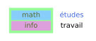
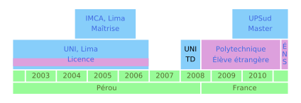
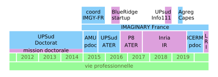
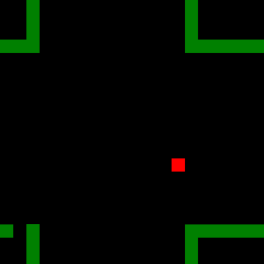
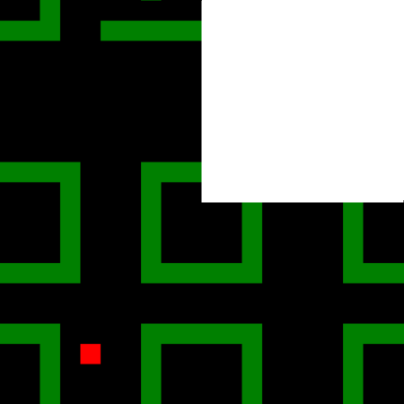
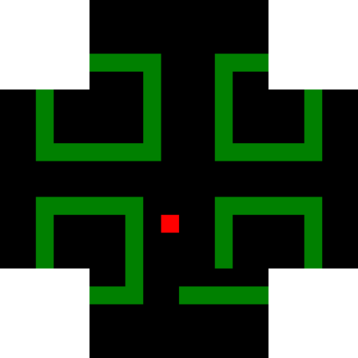

Alba Marina Málaga Sabogal
Candidature au poste de maître de conférences n°1320


Parcours
Enseignement, recherche, développement, médiation



Enseignement
Expériences d’enseignement
| 2018 |
U Paris-Sud (60h) |
CEV Informatique |
|
|
L1, TD/TP |
|
|
C++, Jupyter |
|
|
|
| 2016–2017 |
U Paris 8 (192h) |
ATER Informatique |
|
|
L2, M1, accessibilité |
|
|
Wordpress, Python |
|
|
|
| 2015–2016 |
U Paris-Sud (192h) |
|
| 2014 |
U Paris-Sud (96h) |
|
| 2008 |
UNI (192h) |
|
Au total,
\(> 600\) h
dont 192h responsable de cours.
Cours donnés :
En L1 MPI (chargée de TD/TP) : Intro. à l’informatique (C++)
En L2 MIASHS Accessibilité/Géographie/Langage:
- Calcul formel
- SageMath, pour lequel il faut apprendre le Python
- Mathématiques numériques :
- langage Python - calcul scientifique avec numpy/scipy
En M1 MIASHS Accéssibilité/Géomatique:
- Programmation objet 1 et 2
- Java pour un public majoritairement neoinformaticien
- CMS et frameworks accessibles
- Wordpress, y compris developpement de thèmes/plugins
Mais aussi: TD de géométrie et analyse en PCSO et d’autres cours de mathématiques
Mon ATER à l’Université Paris 8 Vincennes Saint-Denis:
Charge de travail équivalente déjà à un MCF :
- seule personne à charge de tous mes cours
- préparation de deux cours pour une nouvelle formation (la licence MIASHS)
- encadrement d’un étudiant de géomatique en alternance
L’accessibilité :
- thème principal du labo THIM, des formations MIASHS
- des étudiants aveugles en master
- j’ai dû revoir de fond en comble ma façon d’enseigner
Le PPN du DUT MMI
Dans l’organisation actuelle : 5 catégories, 2 UE par semestre, un enseignement progressif à partir des bases.
| Communication, culture et connaissance de l’environnement socio-économique |
Com./écriture |
bases |
|
Esth./vidéo |
approfondissement |
| Culture technologique et développement multimédia |
Info./réseaux\({}\)Transversal |
maîtrise |
|
Professionnalisation |
approche professionalisante |
Cours d’autres catégories
La catégorie esthétique/vidéo:
- pas du domaine des MCF27 en général mais j’y vois l’opportunité pour des intéractions enrichissantes
- j’ai déjà scripté la création de fichiers svg en SageMath/Python et je produis dès fichiers pour l’impression 3D avec Blender
- je pourrais peut-être faire une intervention ? un atelier conjoint ?
La catégorie transversale:
Culture scientifique et traitement de l’information - cours de mathématiques sur trois semestres.
 Je suis prête à l’enseigner dès demain.
Je suis prête à l’enseigner dès demain.
Les licences pro Cross Media et TeCAM: … plein de possibilités.
Contribuer une pierre au PPP

Mon réseau: Meetups, AudiMath, Conférences, Tiers lieux, Séminaires, IMAGINARY
Projets tutorés à l’international

Exemples de projets :
- explorations de formes fractales
- les mathématiques des épidemies
- les grandes migrations
Autre proposition de projet tutoré
Conception de casse-têtes en impression 3D et découpe laser
- regarder des casse-têtes existants (mathématiques ou pas)
- leur chercher d’autres expressions
- s’en inspirer pour d’autres casse-têtes
- venir les presenter en salon

La médiation scientifique
Expérience et inspiration
| médiation autour de projets d’Art-Science dans le cadre de mon contrat doctoral •« La lumière ne s’arrête pas là »•« Premières intimités de l’être »•« Turbulent »• |
 |
- IMAGINARY France
- plus de 150 heures face au grand public
- plus de 10 événements organisés ; une rencontre autour des plateformes de partage
- résautage actif : incitation à de nouvelles contributions, gestion des bénévoles
\(+\) les sorties en école, forums, etc. avec les collègues
Intégration au MMI
- compétence pour enseigner les cours techniques
- intérêt pour la médiation et donc la communication
- souci de l’accessibilité

Recherche
Les systèmes dynamiques
- Evolution deterministe à court terme, qu’on connaît.
- Les questions qu’on se pose concernent l’évolution à long terme.
Un exemple concret : les rotations du cercle:
\(α\) nombre
\(ρ:𝕊^1\to 𝕊^1\) rotation par un angle \(α\)

Conjugué à :

\(𝕋 = ℝ/ℤ = [0,1]/\{0\sim 1\}\).
Les rotations comme échanges d’intervalles
Paramétre: \(α ∈ [0,1[\)
Espace des phases: \(𝕋 = ℝ/ℤ = [0,1]/\{0\sim 1\}\)
\(\begin{array}{rcrcl} ρ_- & : & [0,1-α[ & \to & [α,1[\\ & & x & \mapsto & x + α \end{array}\)
\(\begin{array}{rcrcl} ρ_+ & : & [1-α,1[ & \to & [0,α[\\ & & x & \mapsto & x + α - 1 \end{array}\)
Un exemple fondamental: le tore

La caracteristique d’Euler et le genre:

\(χ = V-E+F = 1 - 2 + 1 = 0\)
\(χ=2-2g\)
\(g=1\)
Un autre exemple simple de surface de translation: le L

La caracteristique d’Euler et le genre du L:

\(χ = V-E+F = 1 - 6 + 3 = -2\)
\(χ=2-2g\)
\(g=2\)
Une autre vue du L:

\(χ = V-E+F = 1 - 6 + 3 = -2\)
\(χ=2-2g\)
\(g=2\)
Définition de surface de translation “finie”.
Une surface de translation est une surface compacte sans bord qui, privée d’un nombre fini de points, possède un atlas tel que que les changements de cartes dans cet atlas sont des translations. Supposons que l’atlas est maximal - les points non couverts par l’atlas sont des singularités coniques de la géométrie de la surface avec un angle qui est un multiple entier de 360 degrés.
Dynamique sur une surface de translation
Billards: un contexte où les surfaces de translation apparaissent naturellement
Questions ouvertes sur des billards polygonaux:
- il existe toujours des trajectoires périodiques ?
- toutes les trajectoires sont denses ? (minimalité)
- il y a ou pas des partitions non triviales (en mesure) en sous-ensembles invariants ? (ergodicité)
La troisième question de cette liste était le point de départ de ma thèse, effectuée de 2011 à 2014 à Orsay sous la direction de Jean-Christophe Yoccoz. La question est encore ouverte, he he, c’est à dire que finalement dans ma thèse je réponds à d’autres questions (moralement) en rapport avec celle-ci.
Cylindres discrets - motivation
Similarité avec des familles d’applications sur le cylindre discret \(ℤ×𝕋\). L’étude de la dynamique de ces applications fût finalement l’objet de ma thèse.
Techniques developpées dans la thèse
Pour montrer ces résultats, je me suis appuyé sur des résultats bien connus pour des échanges d’intervalles, pour lesquelles les propriétés dynamiques que j’étudiais était déjà bien connues:
Thm (Poincaré) Tout système dynamique de mesure finie est conservatif.
Thm (Keane) Tout échange d’intervalles “irréductible” est minimal.
Thm (Masur-Tabachnikov) Tout échange d’intervalle minimal est aussi ergodique.
Ensuite, j’ai procédé par perturbations: des valeurs spéciales de \(α_n=±½\), (c-à-d les rotations par un demi-tour), permettent d’obtenir des sous-ensembles dans l’espace des phases qui sont invariants et qui sont des échanges d’intervalles classiques. Ensuite, en traduit la propriété dynamique qu’on veut montrer dans une formule quantitative et puis on construit des ouverts denses autour de ces paramètres spéciaux en prenant garde à ne pertuber qu’un petit peu cette formule.
Les surfaces en escalier.
Le modèle wind-tree des Ehrenfest:

Avec Serge Troubetzkoy, on a montré que génériquement, la dynamique du wind-tree est minimale (2015), ergodique (2016), de puissances cartésiennes ergodiques (2016-2017) et uniquement ergodique (2017-2019) dans presque toute direction.
Retour aux surfaces en escalier:
Illustrations des mathématiques et intégration dans Gamble
Tores plats et autres surfaces de translation pliées en origami

Pliages en papier hyperbolique (ou Kombucha)
Impression 3D de surfaces algébriques
Impression 3D d’autres objets mathématiques
Analyse d’anciens objets en plâtre
Ce que (je pense que) je peut apporter dans Gamble
En tant que mathématicienne
Compétences poussées en:
- géométries 2D et 3D (y compris non-euclidiennes)
- systèmes dynamiques
Compétences raisonnables en:
- géométrie algébrique “à l’ancienne” (c-à-dire sans schemas)
- géométrie riemannienne
- analyse numérique
- théorie des probabilités
En tant que médiatrice scientifique
- une facilité à parler de sciences avec… tout le monde
- un réseau de contacts en mathématiques qui va bien au-délà de mon domaine
- un savoir-faire de “maker”